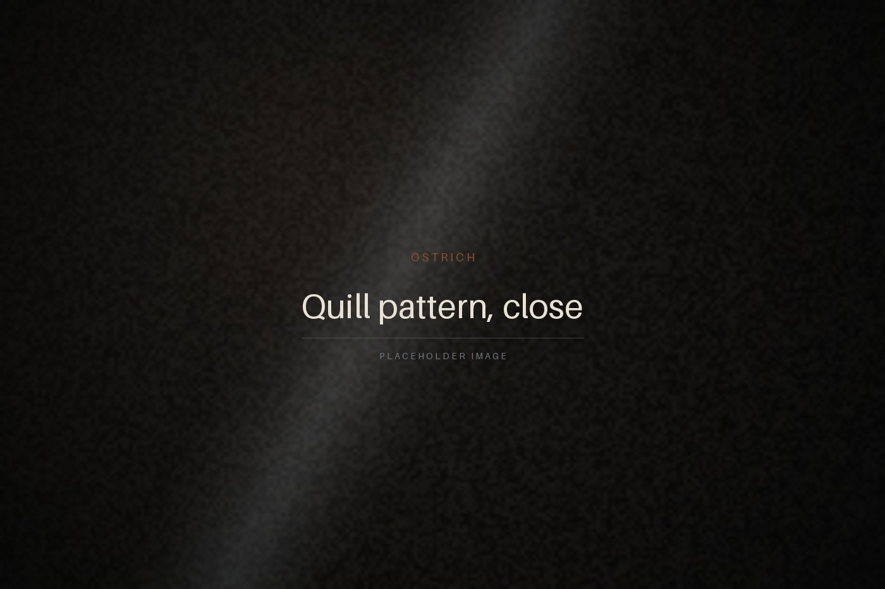

01 — OSTRICH
Ostrich
The quill field, read across a room.
Ostrich is graded on the crown — the dense field of raised follicles across the back of the bird. Full-quill means we cut the panel from that crown and nowhere else, which uses more hide than any other way of laying a pattern. It is also the only reason ostrich looks like ostrich.
- OriginKlein Karoo and Eastern Cape farms
- TannageChrome-free, drum-dyed
- Thickness1.2 – 1.4 mm
- Ages toA soft sheen where the hand falls